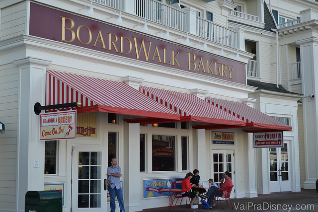
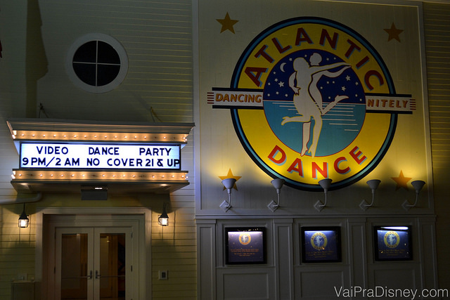

Melhores dicas

Disney’s Boardwalk: entretenimento fora dos parques
Sempre que pensamos em Disney, logo vêm a cabeça os parques e no máximo Downtown Disney. Mas existe muito mais a fazer no complexo Disney do que imaginamos e um dos maiores e melhores exemplos disso é o Disney’s Boardwalk, um lugar repleto de programações super legais e pouquíssimo conhecida pelos brasileiros. Vocês já ouviram falar de lá? Este é um dos meus cantinhos favoritos dentro da Disney e fica “semi escondido” no fundo de um hotel e do lado de dois parques. Vou contar um pouco mais da proposta do Boardwalk e o que você encontra por lá e tenho certeza que você vai entender o motivo de eu gostar tanto deste lugar.
Diz se é ou não um dos lugars mais legais e lindos da Disney?
O que é o Disney’s Boardwalk?
O Disney’s Boarwalk nada mais é do que um “calçadão” ou uma espécie de “vila” com opções de entretenimento, alimentação e atividades de rua, que fica no fundo do Disney’s Boardwalk Inn, um dos hotéis mais lindos do complexo Disney. Aliás, vamos esclarecer uma coisa logo de cara para evitar confusão: quando eu falo “Disney’s Boardwalk Inn” estou me referindo ao hotel e quando eu falo “Disney’s Boardwalk” ou só “Boardwalk” estou me referindo a área de entretenimento, este calçadão no fundo do hotel, tá?
Isso esclarecido, quero dizer que o Disney’s Boardwalk Inn é de longe o meu hotel preferido dentro da Disney, mesmo muito antes de eu ter tido a oportunidade de me hospedar lá. Acho cada detalhe deste hotel incrível e o mais legal de lá é justamente a oportunidade de você curtir tudo de melhor que o hotel oferece mesmo sem se hospedar lá. Como? Visitando o Disney’s Boardwalk ué!
Entrada do Boardwalk Inn, hotel onde ao fundo, fica o Disney’s Boardalk.
É no fundo do hotel, no Disney’s Boardwalk que fica a maior parte da graça deste resort, que todos os dias recebe a visita de muitas pessoas que não são hóspedes. O Boardwalk fica no entorno de um lago, assim como o Disney’s Beach Club Resort (que já nos hospedamos e contamos aqui) e o Disney’s Yacht Club Resort. A visão do contorno destes hotéis na beirada do lago por si só já é charmosa o suficiente para valer sua visita, e olha que eu não costumo ser muito sensível pra essas coisas, heim? É uma gracinha mesmo! Aliás, é do fato do Boardwalk ficar na beirada deste lago que originou o seu nome: Boardwalk significa algo como “calçadão na orla”.
Vale dizer que a localização do Boardwalk também facilita bastante que este local entre na sua programação. Além de ser vizinho do Disney’s Beach Club e Yacht Club, o Boardwalk também é vizinho de mais dois hotéis (o Dolphin e o Swam) e de dois parques: o Hollywood Studios e o Epcot. Dá até para ir a pé ou de barco dos parques para o Boardwalk e vice-versa (saiba mais sobre como usar transporte interno e gratuito da Disney clicando aqui). Vale dizer que a entrada do Epcot que é vizinha ao Boardwalk não é a entrada principal, mas a entrada do International Gateway, que fica próximo ao pavilhão do Reino Unido. É por lá que os hóspedes dos hotéis dessa região chegam ao parque pela manhã, seja de barco ou a pé mesmo. Se você preferir visitar o Boardwalk de carro, você também pode. Basta chegar na entrada do Boardwalk Inn e avisar que vai ao Boardwalk e pronto! Você será admitido no estacionamento de visitantes do hotel. Minha recomendação é que vá de carro caso deixe para visitar o Boardwalk após o fechamento dos parques.
Chegando no hotel, você pode ou cruzar a recepção ou seguir esta plaquinha ainda no exterior da entrada e pronto! Já vai dar no Boardwalk.
A proximidade com os parques, em especial o Epcot, traz mais benefícios do que a simples praticidade no roteiro. De lá do Boardwalk você consegue avistar os fogos do Epcot de longe, um show gratuito para quem visita este local!
Bom, agora que você já sabe o que é o Boardwalk e como chegar lá, precisa saber o que existe de legal por ali, certo? Então vou listar as atrações existentes por lá em uma espécie de mini roteiro dividido em alimentação (com opções desde quiosques á restaurantes super legais) e entretenimento. Espero que encontre algo interessante para curtir com a sua família.
Alimentação no Disney’s Boardwalk
Boardwalk Bakery
Se você acompanha esse blog ou me conhece, já deve ter notado que eu gosto de comer bem, ainda mais quando eu estou de férias. Para mim, a Bakery do Boardwalk é parada obrigatória pois contém alguns dos meus doces preferidos na Disney. Ela inclusive está na lista de Top 10 Doces da Disney que eu fiz (e você encontra aqui). Experimente o que tiver vontade e eu tenho certeza que você vai se sair bem. Nunca comi nada ruim neste lugar e por isso recomendo DEMAIS. Se quiser uma dica, eu adoro o Cheesecake Brownie que é simples e delicioso ou ainda a Peanut Butter, Banana, and Candied Bacon Pie. Sim, eu disse banana e bacon na mesma comida mas eu garanto que é sensacional! O Sticky Bun deles (uma massa meio folhada com caramelo e nozes) é gigante mas maravilhoso e uma das pedidas preferidas do Felipe. O bom da Bakery é que ela abre cedinho e fecha bem de noitão, então ela é uma boa opção para qualquer momento do dia que você queira dar uma paradinha. Tem opção para café da manhã, lanchinhos, jantar rápido, o que você quiser. Eu poderia (e acho que um dia vou) fazer um post só sobre este lugar mas hoje vou resumir assim: se só existisse a Boardwalk Bakery no Boardwalk, eu ainda assim visitaria este lugar em todas as minhas idas à Orlando.


Sticky Bun (um folhado com canela, nozes e caramelo) e croissant de amêndoas.
Alguns dos deliciosos doces da Boardwalk Bakery.
Espn Club
Este restaurante foi feito especialmente para os viciados em esportes que gostam de comer enquanto assistem o jogo do dia, mas agrada a família toda, mesmo quem não é tão fã de esportes assim. Com um estilo meio bar, meio lanchonete (no mesmo tipão do Outback sabe?) o ESPN Club possui televisões em absolutamente TODOS os cantos para garantir que sempre haja um esporte passando no seu campo de visão aonde quer que você esteja lá dentro. Para você ter uma idéia, até nas cabines dos banheiros você tem uma TV! O local todo é bem descontraído e você pode se acomodar em mesas tradicionais, no bar, ou até em algum dos poucos (e disputaods) sofás. É o tipo de restaurante que traz uma experiência bem diferente, aliado de uma refeição bem gostosa. Se você se interessou, não deixe de ler como foi a nossa experiência jantando no ESPN Club, clicando aqui.

Vai acompanhando a quantidade de TVs ligadas espalhadas pelo ESPN Club

Prova de comprometimento é: esperar o banheiro ficar vazio para poder fotografar as TVs sem ser julgado e poder mostrar pra vocês.
Joe Marvelou’s Margaritas
Famoso quiosque que vende margaritas de diversos tipos das mais básicas até as mais especiais. É só um quiosquinho no meio do Boardwalk mas muitas vezes você não precisa de mais nada para curtir sua noite além de:
- Uma bela vista com um clima legal
- Uma boa companhia
- Uma bebida gostosa essa.
- E quem sabe um docinho da Boarwalk Bakery, depois?

Eu acho tudo a ver com o clima do Boardwalk simplesmente comprar uma bebida, sentar em um dos banquinhos em frente ao lago e ficar de papo pro ar, admirando à vista, assistindo as atividades que acontecem na rua e quem sabe ver os fogos do Epcot de longe. Se você também curte programações assim e pretende comprar uma margarita ou qualquer outra bebida enquanto estiver no Boardwalk, é bom levar o seu passaporte para garantir que não vão te achar com cara de menor de idade. Mesmo quando você não tem cara de menor de idade, não é incomum pedirem a documentação.
Flying Fish Cafe
Este restaurante super conceituado é especializado em peixes e frutos do mar em geral. Ele é bem bonito e super bem avaliado, mas como todo restaurante conceituado e com esta especialidade, é meio caro. Como não sou fã de frutos do mar, então quando a escolha depende de mim, eu prefiro investir meus dólares em outros lugares. Se você é fã de frutos do mar, saiba que eu (tudo bem, na minha visão meio leiga do assunto) acho oCoral Reef (no Epcot) ou o Narccoossee’s (no Grand Floridean) opções de restaurantes de frutos do mar bem mais interessantes para você se considerar. Não é que o Flying Fish seja ruim, ele está BEM longe disso! Mas em uma comparação eu prefiro os outros que trazem a mesma especialidade (e também preços altos) e uma experiência melhor.
Entrada do Flying Fish, no Disney’s Boardwalk.
Trattoria al Forno
Este é o restaurante mais novo do Boardwalk, que será inaugurado no dia 18 de dezembro de 2014. Ele substituiu o Kouzzina, um restaurante grego da renomada chefCat Kora que fechou as portas no primeiro semestre de 2014. A Trattoria al Forno ainda não abriu mas muitas informações já foram divulgadas e a promessa da casa é ser um italiano tradicional como se deve ser, com opções de queijos, massas, e pizzas, tudo bem fresquinho. A gente sempre fica com um pé atrás quando falamos de italiano de verdade nos EUA porque aquele molho de tomate americano é 100% nativo dos EUA, né? Não tem nada a ver com a versão brasileira ou italiana. De qualquer forma, no Tutto Italia e noVia Napoli a Disney fez restaurantes realmente típicos italianos, então gosto de acreditar que vão acertar a mão no Trattoria também. O cardápio já foi divulgado pela Disney e você pode encontrá-lo clicando aqui. Destaque especial para a mussarela que é feita diariamente no local. Assim que eu experimentar, conto para vocês o que achei! 
Big River Grille & Brewing Works
Eu adoro este lugar! É um restaurante com um estilinho de bar que é especializado em cervejas artesanais feitas por eles. Este é um lugar que eu nunca dei a menor bola dentro do Boardwalk até eu conhecer bem sem querer e me apaixonei! É a prova de mesmo quem conhece bem a Disney sempre se surpreende e sempre tem muito mais o que conhecer (e é por isso que amo tanto ir pra lá). O cardápio é bem focado em comida americana de verdade, ou seja, não é nada chique tá? Mas é tudo bem gostoso. Se você quiser conhecer mais sobre o Big River Grille, eu já escrevi uma matéria contando em detalhes a nossa experiência e avaliação deste restaurante. Clique aqui para acessá-la.
Degustação de cervejas artesanais no Big River Grille, no Boardwalk.
Entrada do Big River Grille.
Seashore Sweets
É uma lojinha de doces bem similar às lojas de doces que você encontra nos parques, sabe? Mais focada em doces “porcaria” do que em doces tipo sobremesas mesmo (essas você encontra na Boardwalk Bakery). Se você já estiver no Boardwalk para alguma outra coisa e tiver alguma pessoa mais “formiguinha” no seu grupo, vale visitar rapidamente esta loja.
Quiosques de alimentação
Além das opções já citadas, existem alguns quiosques que vendem algumas comidinhas como o Funnel Cake que eu adoro, mas acho que o Boardwalk tem muito mais para oferecer além das opções que você já encontra em outros locais como os parques. Por isso eu não focaria nos quiosques se eu fosse você.
Pizza Window
É uma janelinha para pedir uma pizza e comer lá fora (ou no quarto se você for hóspede). Ela fica do lado da Boardwalk Bakery também, mas não tem nada a ver com o resto da proposta da Bakery. É uma opção para quem não curtir mais nada por ali ou quiser uma opção simples e hiper rápida. Pizza sempre é uma opção democrática que resolve o problema daquele jantar-preguiça de qualquer família, né? De qualquer forma, assim como os quiosques, acho que o Boardwalk tem opções mais legais para você curtir.
Entretenimento no Disney’s Boardwalk
Arcade
Assim como todos os hotéis da Disney, o Boardwalk Inn traz um salão de jogos, mas o deles é um pouco mais legal do que dos outros hotéis, afinal, fica no Boardwalk. Lá você encontra diversos fliperamas e outros joguinhos, bem do tipo daqueles que existem em alguns shoppings, sabe? Algo simples mas que sempre distrai as crianças.
Atlantic Dance Hall
É uma baladinha. Eu nunca fui, mas desde que fecharam a Pleasure Island em Downtown Disney, eu fico com pé atrás com balada na Disney viu. Balada não tem cara de Disney, né? Não é “especialidade da casa”. Além do que, sempre vejo este lugar meio vazio então acho meio furada. De qualquer forma se tiver curiosidade e a oportunidade de conhecer, depois me conte como foi e o que achou.

Jellyrolls
Sem sombra de dúvidas um dos lugares que eu mais gosto dentro do Boardwalk. No quesito bar, não precisa ter pé atrás nenhum com a Disney, tá? Eles acertam em cheio e o Jellyrolls é a prova disso. Nesse barzinho bem gostoso, rola um duelo de pianistas e você pode participar enviando as músicas para eles tocarem. Além disso, a água e a pipoca são grátis e à vontade para todo mundo que está lá dentro, o resto é pago. É uma programação deliciosa para o meu gosto e super no estilo do Boardwalk.
Além dessa plaquinha luminosa legal, o Jellyrolls traz um duelo de piano muito legal.
Atividades de Rua
Dá para se entreter no Boardwalk na rua do local mesmo, basta se atentar as atividades que acontecem por lá. Principalmente a noite, você sempre encontra alguns artistas fazendo pequenos shows de rua, seja de comédia ou malabarismo. É sempre super bem feito e divertido e muitas vezes eles convidam algumas pessoas para participarem de alguma parte do show. Além disso, tem uns quiosques de joguinhos de rua por lá também. Outra opção disponível é o aluguel de bicicletas que comportam mais de uma pessoa, sabe? Tem sempre gente circulando pelo Boardwalk em uma dessas bicicletas e a locação é feita lá mesmo.
Aluguel de bicicletas coletivas estão disponíveis no Boardwalk também.
Lojas
Como todos os lugares na Disney, o Boardwalk também tem lojinhas espalhadas que vendem desde ursinho de pelúcia até abridor de vinho com tema da Disney. A loja principal é bem grande e completa e apesar de focar nos hóspedes do hotel, eu acho que ela merece sua visita também. Se tiver tempo e se interessar, não deixe de ver a loja de quadros que fica um pouco escondidinha meio que ao lado/ao fundo da loja principal.
Principal loja do Boardwalk, super completa.
Só de escrever já estou morrendo de vontade de ir para o Boardwalk. Já falei e repito: este lugar é especial para mim e um dos meus locais preferidos dentro da Disney. Espero que você aproveite e descubra razões para gostar tanto do Boardwalk quanto eu.